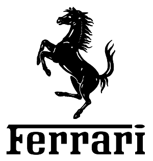

INDEPENDENT DIGITAL STUDIO · PHASE LABS
Diseño experiencias digitales donde la estética y la interacción trabajan juntas.
Phase Labs es un estudio digital independiente donde exploro frontend, interacción, motion design y experiencias visuales modernas. Cada proyecto es una oportunidad para combinar diseño, tecnología y experiencia de usuario.
Frontend
UI · Motion · Experience
01
Frontend Interfaces
02
Visual Experiences
03
Creative Development
Un laboratorio para experimentar con diseño, código e interacción.
Frontend UI
Desarrollo interfaces modernas enfocadas en claridad visual, experiencia de usuario y rendimiento.
Desarrollo Web
Construyo sitios y experiencias digitales utilizando HTML, CSS y JavaScript con atención al detalle.
Motion & UX
Animaciones, microinteracciones y sistemas visuales que aportan personalidad sin afectar la usabilidad.
Experiencias digitales seleccionadas.
Interactive Dashboard
Concepto visual enfocado en visualización de datos, interfaces modernas y diseño futurista.
Luxury Landing
Landing premium inspirada en marcas de lujo, enfocada en tipografía, percepción visual y experiencia editorial.

The New Collection
Crafted for modern living.
Motion Experience
Exploración de animaciones, transiciones suaves y efectos interactivos enfocados en experiencia visual.